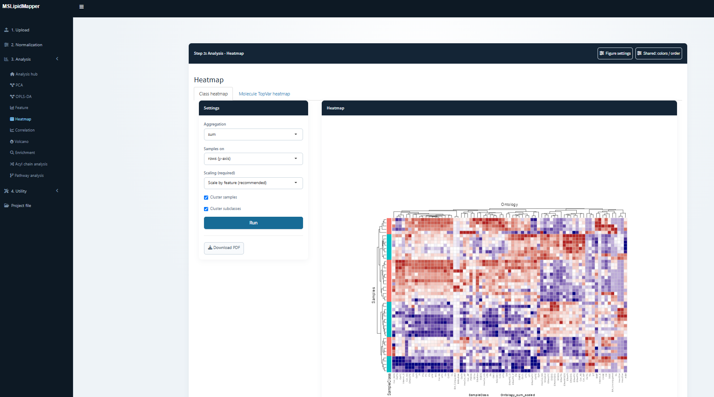
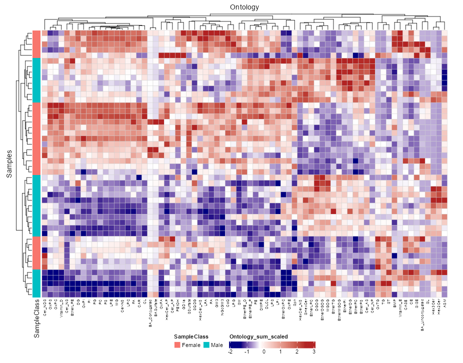
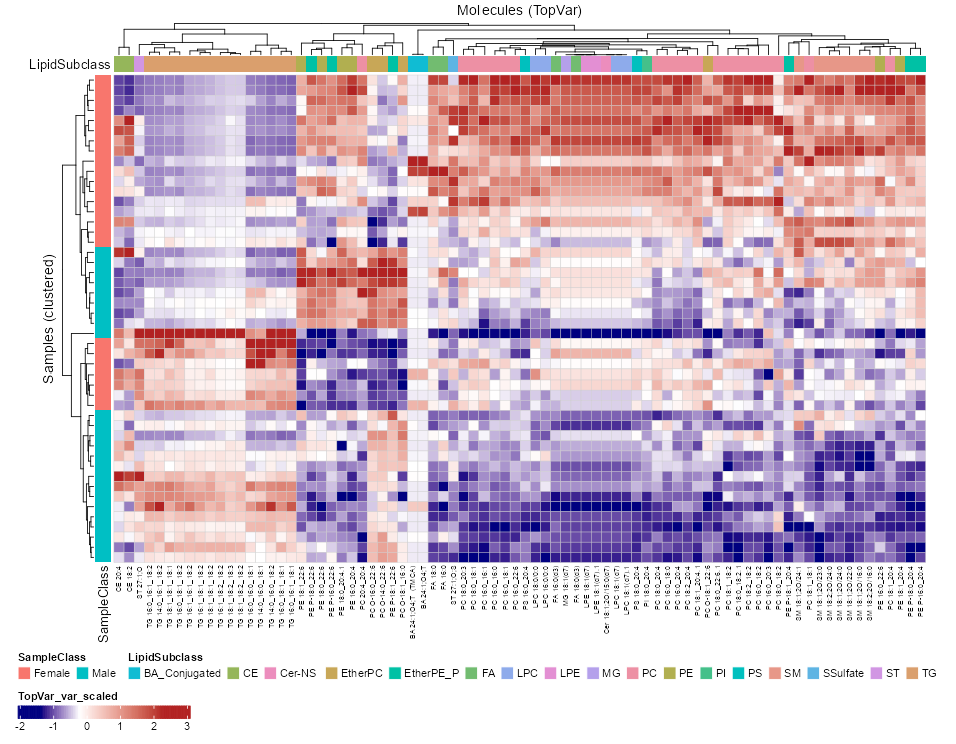

Heatmap
Explore lipid class abundance patterns across samples with heatmaps.
Class heatmap
Open 3. Analysis → Heatmap and select the Class heatmap tab.
- Set Aggregation to sum for this example to summarize molecular abundances within each lipid class.
- Under Samples on, select rows (y-axis) to display samples as rows and lipid classes as columns.
- Under Scaling (required), select Scale by feature (recommended).
- Enable Cluster samples and Cluster subclasses to cluster both dimensions.
- Click Run.


Read the heatmap
With the illustrated orientation, each row represents a sample and each column a lipid class. Feature scaling emphasizes relative variation across samples within each class. Use the color legend to interpret the scaled values. The dendrograms summarize similarity among samples and among lipid classes, while the sample annotation identifies the groups.


Customize and save
Use Figure settings to adjust the heatmap appearance and Shared: colors / order to configure sample-group colors and display order. Click Download PDF in the Settings panel to save the heatmap.
Molecule TopVar heatmap
Select the Molecule TopVar heatmap tab to explore variation at the individual lipid level.
The supplied result displays samples as rows and individual lipid molecules as columns. The left SampleClass annotation identifies Female and Male samples, while the top LipidSubClass annotation identifies the lipid class of each molecule. The dendrograms show clustering in both dimensions.
Use the TopVar_var_scaled legend to interpret relative values. Red indicates higher scaled values, purple indicates lower values, and white is near zero.

